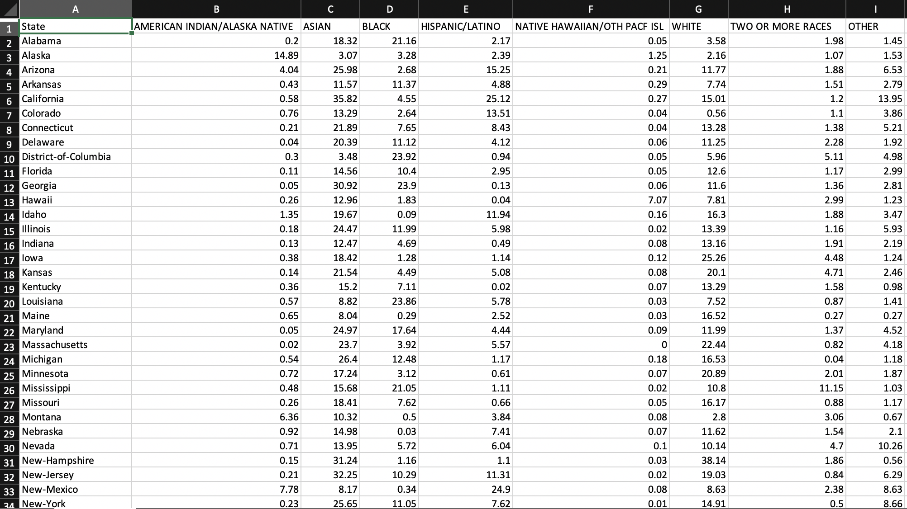
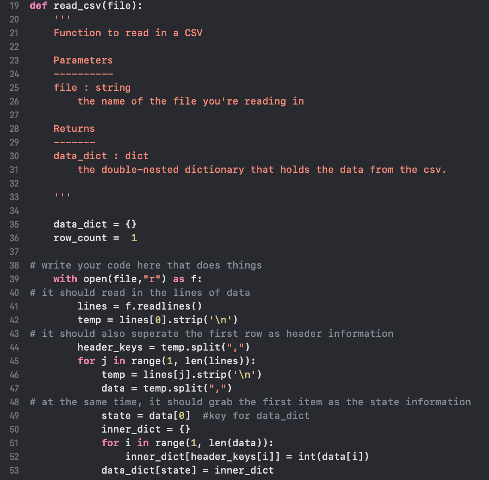
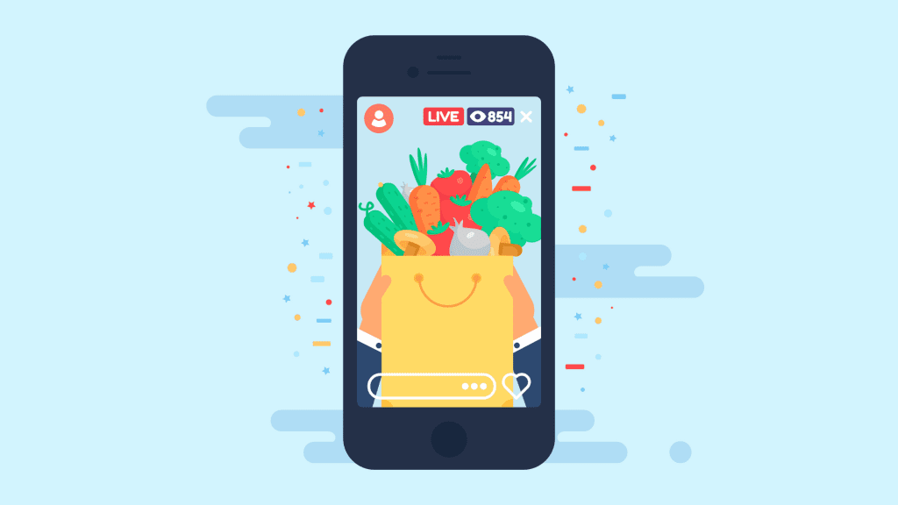
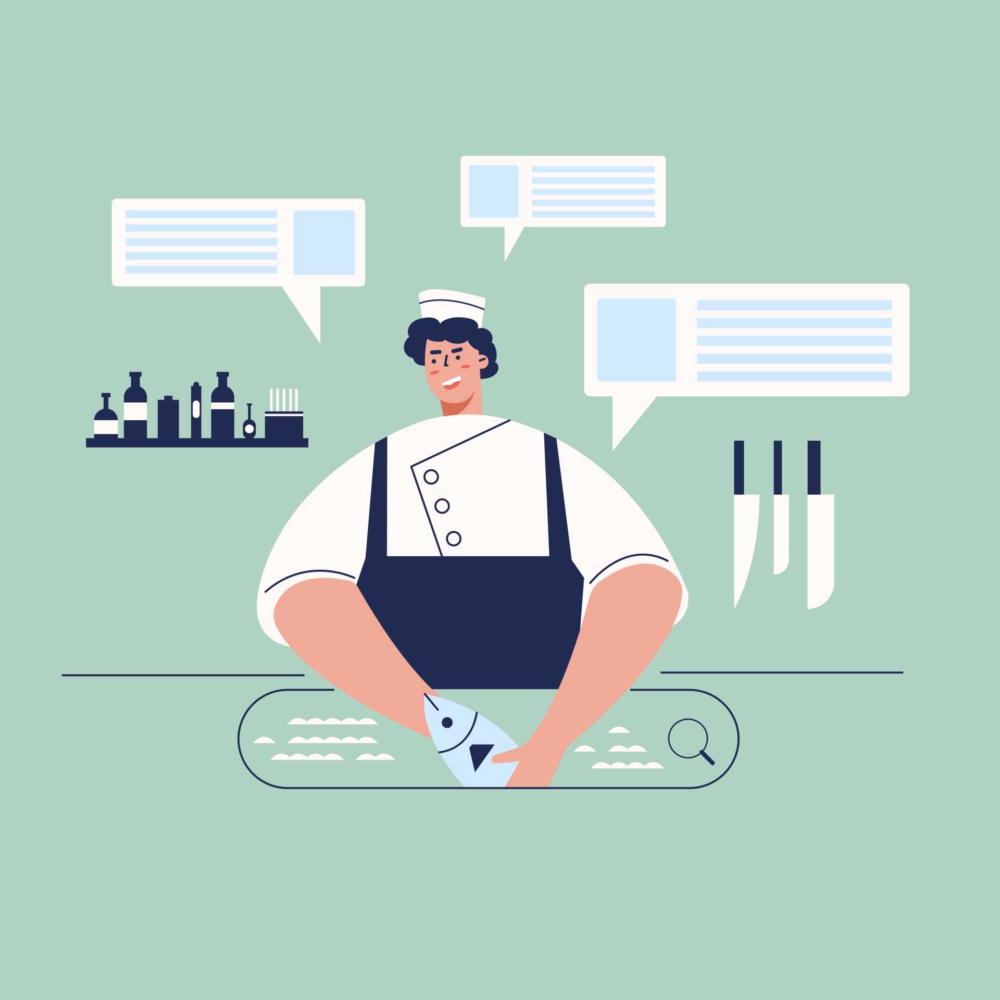
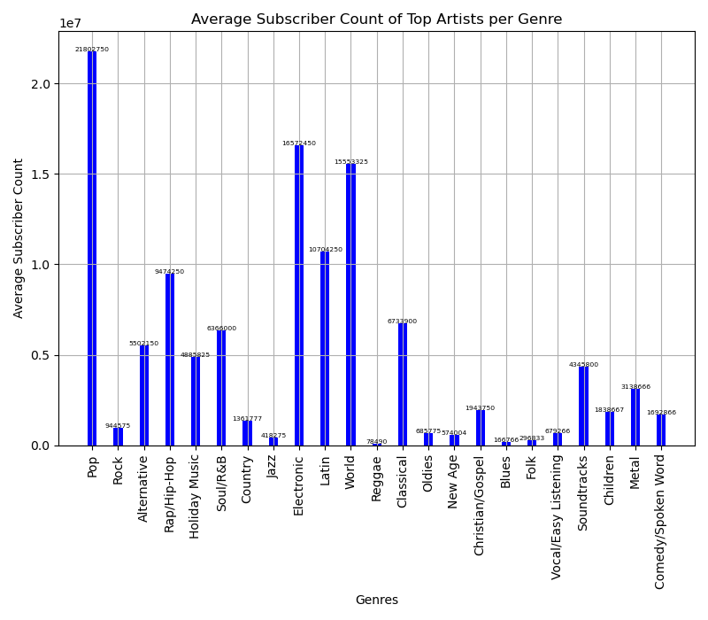
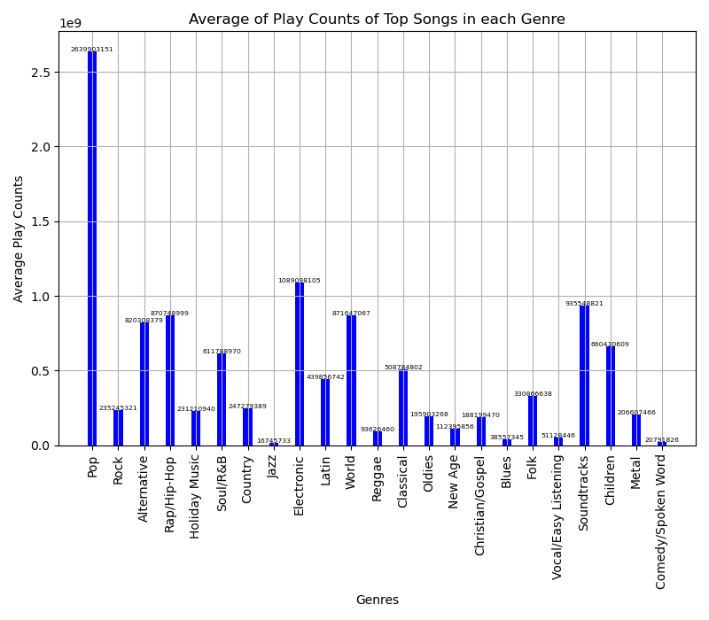
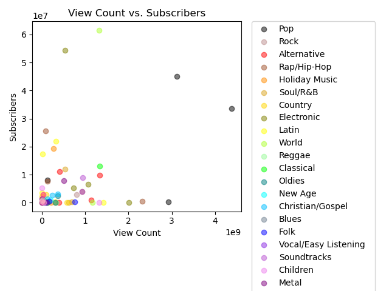

I decided to go out of state for college so I could experience a new environment outside of my home bubble and grow into the person I want to be in the future. I am passionate about finding the connections between information, people, and technology. With my educational background, I will strive to make technology access equitable and transparent for all groups of people.
Reading from & writing to Comma-Separated Values (CSV) files
In this project, I worked with CSV files to sharpen my skills in data management and analysis. This project looks at online AP exam race and ethnicity data to compare it, state by state, with state race and ethnicity data.
 
SI 582 Interactive Design
Currently, I am working on a semester long project where my team and I are creating a prototype by the end of the semester. Our goal is to go through the design and research process for our target domain and create a deliverable that meets needs and wants. We are tackling the problem space of providing access to food banks and fun, time efficient, easy recipes for food-insecure individuals.
 
Coding Project
This project takes data from 3 different APIs (Youtube, Itunes, Napster Music) and creates a database using SQLite in Python. Using the database created, we performed desired calculations and created visuals to represent the data using matplotlib. The overall goal of this project was to access the popularity of the top artists of 23 music genres.
  